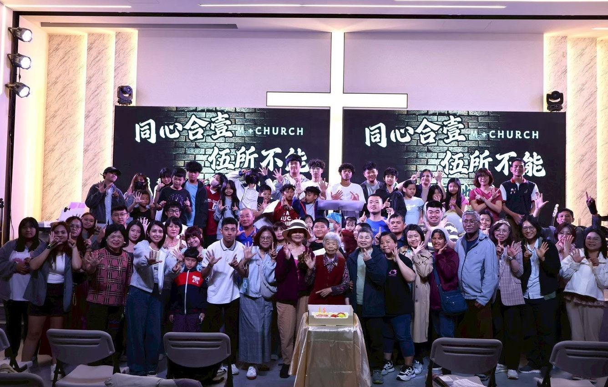
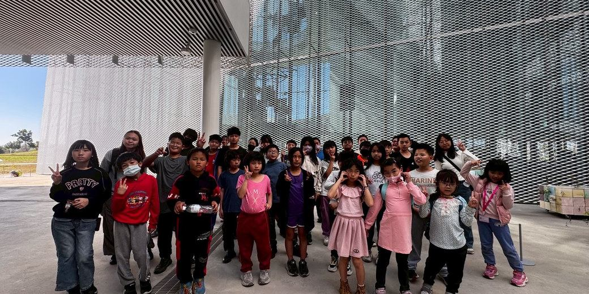

一起成長，學習跟隨主
回想這一年，讓我們感恩的，是有更多弟兄姊妹一起聚會，也一起學習跟隨主。過去成人主日聚會約有 20–30 人，如今已接近 60 人。這些數字背後，是一個個我們珍惜的生命。
我們也為願意繼續扎根的弟兄姊妹感謝神：15 位弟兄姊妹即將完成一年的門徒培育課程；兩位全職同工也開始在神學院學習，預備成為傳道人。看見大家在信仰中成長，也願意回應呼召、投入服事，是這一年格外珍貴的恩典。
親愛的弟兄姊妹、朋友們，平安！
感恩節將近，想先向你問聲好。這段日子，你和家人一切都好嗎？願主的平安與恩典，在每一天的忙碌與挑戰中陪伴你，也願你心裡常有從祂而來的力量與盼望。
每到這個時節，回想這一年走過的路，心裡總有許多感謝。謝謝上帝一路的帶領，也謝謝每一位以禱告、陪伴、服事與奉獻支持教會的家人和朋友。因著這些同行與守望，許多孩子被接住、長輩被關心，年輕的生命也漸漸找到盼望。
今天想藉著這封信，把 M+大雅教會這一年所經歷的恩典，與你分享。也邀請你在讀信時，為信中提到的人與事獻上一個禱告，與我們一同仰望上帝，帶著感恩的心迎向新的一年。
今年，我們一同見證教會成長、生命更新、下一代被建造。感謝上帝，使用 M+Church 走進社區、連結眾教會，將福音的光帶進更多家庭。
「耶和華果然為我們行了大事，我們就歡喜。」
— 詩篇 126:3



從一個個願意跟隨耶穌的生命開始，我們在這一年經歷了豐盛的恩典。弟兄姊妹更加合一、主動服事，教會充滿喜樂和活力。
回想這一年，讓我們感恩的，是有更多弟兄姊妹一起聚會，也一起學習跟隨主。過去成人主日聚會約有 20–30 人，如今已接近 60 人。這些數字背後，是一個個我們珍惜的生命。
我們也為願意繼續扎根的弟兄姊妹感謝神：15 位弟兄姊妹即將完成一年的門徒培育課程；兩位全職同工也開始在神學院學習，預備成為傳道人。看見大家在信仰中成長，也願意回應呼召、投入服事，是這一年格外珍貴的恩典。
夢想加油站課輔班持續陪伴弱勢家庭孩子，提供晚餐、學習與生命支持；不老俱樂部關心社區長輩。青少年團契也轉型為陪伴與建造門徒的團契。
2026 熱火籃球營連結 22 間教會、約 100 位青少年，約半數尚未信主、約三成決志回應福音。至十一月後續關懷統計，已有 10 位年輕人受洗！
隨著教會成長、同工裝備與社區事工擴展，年底仍有經費與資源需要。邀請您繼續為我們代禱，一起為下一代、為社區、為神的國度持續撒種。
願更多家庭、孩子與年輕生命，因著基督的愛得著盼望。
感恩節快樂！
M+Church／M+大雅教會
主任牧師 吳俊璋 暨全體同工 敬上
每一份奉獻與守望，都將成為教會持續牧養、陪伴與關懷的力量。
歡迎透過以下方式與我們同行。
謝謝您的奉獻與支持。請留下必要資料，方便教會財務核對，並由教會 OS 安全地通知負責同工。